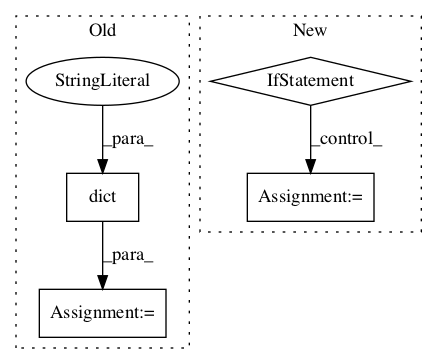

980fe014b6215730ac4fdfa451b067e6fb44e622,tensorforce/agents/dpg.py,DeterministicPolicyGradient,__init__,#DeterministicPolicyGradient#Any#Any#Any#Any#Any#Any#Any#Any#Any#Any#Any#Any#Any#Any#Any#Any#Any#Any#Any#Any#Any#Any#Any#Any#Any#Any#,129

Before Change
predict_terminal_values=predict_terminal_values
)
baseline_policy = dict(network=critic_network, distributions=dict(float="gaussian"))
baseline_optimizer = critic_optimizer
baseline_objective = dict(type="value", value="action")
super().__init__(
After Change
preprocessing=preprocessing,
exploration=exploration, variable_noise=variable_noise,
l2_regularization=l2_regularization, entropy_regularization=entropy_regularization,
parallel_interactions=parallel_interactions,
config=config, saver=saver, summarizer=summarizer, recorder=recorder
)
policy = dict(
type="parametrized_distributions", network=network, temperature=0.0,
use_beta_distribution=use_beta_distribution
)
In pattern: SUPERPATTERN
Frequency: 3
Non-data size: 4
Instances
Project Name: reinforceio/tensorforce
Commit Name: 980fe014b6215730ac4fdfa451b067e6fb44e622
Time:
Author: null
File Name: tensorforce/agents/dpg.py
Class Name: DeterministicPolicyGradient
Method Name: __init__
Project Name: arnomoonens/yarll
Commit Name: 3ff2a365cc9ddd5faf8c9f3d1efafe5216cd10a7
Time:
Author: null
File Name: A2C.py
Class Name: A2C
Method Name: __init__
Project Name: arnomoonens/yarll
Commit Name: 3ff2a365cc9ddd5faf8c9f3d1efafe5216cd10a7
Time:
Author: null
File Name: REINFORCE.py
Class Name: REINFORCELearner
Method Name: __init__